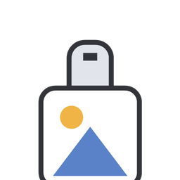

核心流转
拖进任何软件
原生 OLE 拖拽，不是模拟。图片能拖进资源管理器、微信、QQ、飞书、Word、Photoshop、VS Code。

Hangboard截图挂在屏幕顶上晾着。点一下复制，拖进任何软件，用完摘下来。
一个 Windows 小工具：每张截图自己挂到屏幕顶端的一条细线上。平时完全看不见，需要时把指针挪到屏幕顶上，它就垂下来。
免费开源（MIT）· Windows 10 / 11 · 无需账号，不联网，不收集数据
下面这块「屏幕」就是它平常的样子。按 Ctrl+V 或点「截一张图」，照片会挂到线上；把指针移到顶端可以自己唤出线。
原生 OLE 拖拽，不是模拟。图片能拖进资源管理器、微信、QQ、飞书、Word、Photoshop、VS Code。
右键「提取文字」，调用 Windows 自带的 OCR 引擎识别，不联网、不上传，结果直接进剪贴板。
框选完先别急着撒手：矩形、椭圆、箭头、画笔、荧光笔、马赛克、文字，七种工具，颜色和粗细随选。
截图不再落到桌面等你翻文件夹。它直接挂到线上，点一下就回到剪贴板，立刻能粘。
多显示器也不用管：指针在哪块屏上，线就垂在哪块屏，截图也截那一块。
平时它完全隐形，鼠标直接穿过去。只有指针碰到屏幕顶端那一条，它才下来。
💡 试着在键盘上按下对应的组合键，体验界面实时高亮！
快捷键都能在设置里改。托盘菜单能呼出设置面板，界面语言（中文 / English）也在那里切。
没有账号，没有分析，没有遥测。文字识别用的是 Windows 系统自带的引擎，图片和文字都留在你自己的机器上。源码是 MIT 许可，你可以自己编译一份。
用 Rust + Tauri 写成，安装包只有 1.5 MB。相比 Electron 那套几百兆的运行时，它启动快、占内存少。
系统工具把截图存成文件，你得去文件夹找。Hangboard 让截图停在你能看见的地方，点一下就回剪贴板。它不替换系统截图键，两者可以共存。
不会。每张截图都存成 PNG 放在数据目录里（默认 %APPDATA%\Hangboard\shots），线上的只是索引。摘下卡片才会删掉那个文件，所以你不摘，它就在。
安装包没有买代码签名证书。这是个人开源项目，证书一年要好几百美元。你可以直接看源码自己编译，或者点「更多信息 → 仍要运行」。
目前只有 Windows。核心逻辑是 Rust，但窗口穿透、原生拖拽、系统 OCR 这几块都贴着 Windows API 写的，移植要重写。macOS 上有个同类软件叫 Tendedero，Hangboard 的设计参考了它。
Windows 11 和保持更新的 Windows 10 自带，不用管。太老的系统上安装程序会自动下载。